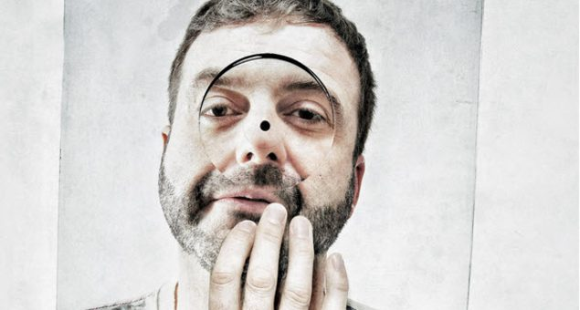

Funk D’Void: "A bag of crisps lasts longer than half the stuff you hear these days"


“There aren’t a lot of tunes that get people really excited, or are truly long lasting.” So says Funk D’Void AKA Lars Sandberg, the man tasked to helm the upcoming Balance 022 due out later this month. “Don’t get me wrong, they’re great for the club, but they can be disposable. There’s a longer-lasting effect of having a bag of crisps than half the stuff you hear these days,” he laughs.
For his entry into the Balance series, Sandberg says he traded in a few of the upfront tunes and instead going with a more ‘timeless’ approach, in the end sourcing around half of the tunes used from the past 12 months, while others came from as far back as 20 years ago.
“I listened to tracks from over the years, went through my whole collection and tried to locate that whole ‘memory imprint’ thing with the tracks. Remembering when I was into that track at a certain point… these are the kind of tracks that stay with you,” he says. “This was the challenge for me, to try and capture that kind of feeling that I had with these tracks, to see if it connected with anyone else; and then put them in a mix that sounded good, basically.”
Sandberg says this ideology is consistent with what’s become his own creative approach over the years, which he says has been regularly peppered with dry spells. “It’s not like a button I can press, I’m not one of those guys who can churn out an identikit tech house monster every week. I have to be inspired, and I need to have a reason to write music… although the Balance project has definitely given me something to do over the past few months.” Funk D’Void Balance 022 is out through Balance Recordings and EMI on September 28th.